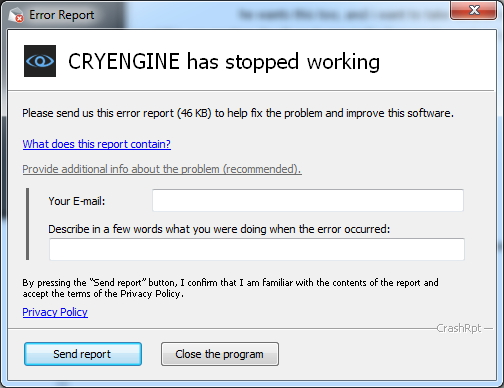

Основные моменты выпуска
Crash Reporter уже доступен
Новый Crash Reporter теперь активирован. Если движок выйдет из строя, откроется следующее окно:

Это позволит вам отправить нам информацию (вместе с необходимыми файлами) и создать отчет об ошибке, который будет отправлен нашей команде QA. Таким образом, сообщить о катастрофе стало еще проще.
Аудио
Фмод
- Исправлено: Библиотеки Fmod теперь корректно добавляются в сборку.
Ядро/Система
Общие сведения о двигателе
- Исправлено: Добавлен GeomEntity, не видимый в GameLauncher.
Физика
PhysX
- Исправлено: Объединить изменения из основного в main_stabilization — устранить прежнее ограничение только на 4-колесные транспортные средства в PhysX.
Сеть
Сеть Общая
- Исправлено: Специальный сбой при запуске в CEnvironmentProbeEntity.
Известные проблемы
- Проблема с Cryselect. Если пользователи не видят пункт «Создать/восстановить метаданные» (см.: AssetSystem-GeneratingMetadata) они тогда должен;
- Копировать cryselect.exe из последней папки движка <c:\Program Files (x86)\Crytek\CRYENGINE Launcher\Crytek\CRYENGINE_5.3\Tools\CryVersionSelector\cryselect.exe> в папку <c:\Program Files (x86)\Crytek\CRYENGINE Launcher\live\cryselect.exe>
- При этом файлы *.cryproject регистрируются как расширение Windows: cryselect.exe установить